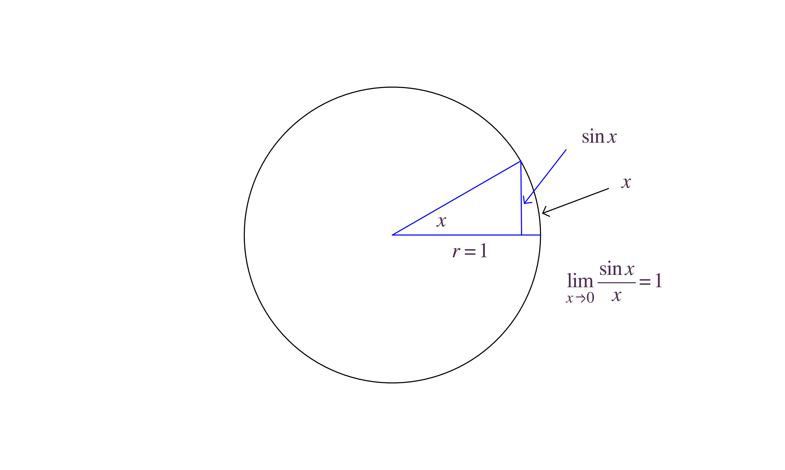
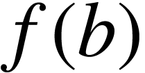
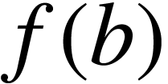
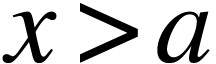
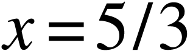
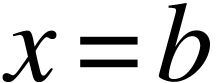

Chapter 2: Limits and Derivatives
1The Tangent and Velocity Problems
1.1The tangent problem (how to find the tangent line)
1.2The velocity problem (how to find instantaneous velocity)
Let be the position of an
object at time . The average
velocity from  to is
to is
The instantaneous velocity is the limit of the average velocity in shorter and shorter time intervals, i.e.
Remark
2The Limit of a Function
2.1Intuitive definition of a limit
For a given function ,
and a point 
in the
domain of , we
say
read as: the limit of ,
as  approaches , equals , if gets
arbitrarily close to as
long as is sufficiently
close to .
approaches , equals , if gets
arbitrarily close to as
long as is sufficiently
close to .
Example  ,
then
,
then
Example Answer. Draw a secant line from to . Its slope is Then the slope of the tangent line is So the equation of the tangent line is
|
Question
Hint: draw a circle.

Example
The limit does not exist!
Example
Remark  can even be undefined on .
can even be undefined on .
Example
Find and .
Answer.
2.2One-sided limits
For a given function ,
and a point , we say
read as: the left-hand limit of , as
approaches , equals , if gets arbitrarily close to as long as is sufficiently close to .
Definition of the right-hand limit is similar.
Example
Answer.
Relation between limit and one-sided limits:
-
If the limit exists, the both left and right hand limit exsits and equal to the limit value itself
-
If both left and right hand limit exists and equal to the same value, then the limit exists and equal to the same value.
-
If both left and right hand limit exists but they are not equal, then the limit does not exist.
Example
|
|
 not exist!
not exist!
2.3Infinite limits
We write
if gets arbitrarily
large when is sufficiently
close to .
Similarly, we can define
Note. In these cases we will not say the limit exists.
Example.
One-sided infinite limits can be defined similarly
Example.
Example.
If the left/right hand limit of is or as approaches , then
the line is called a
vertical asymptote of .
3Calculating Limits Using the Limit Laws
Limit Laws (for limit or one-sided limits)
|
 is a constant.
is a constant.
 provided
the limits on the right-hand-side exist.
provided
the limits on the right-hand-side exist.
Generalize to any algebraic combination of functions: e.g.
Power Law: .
Root Law: ( must be odd if ).
Two simple limits:
Direct substitution property for polynomials and rational functions: where are polynomials. |
Example In fact Another example:
|
If when , then , provided the limits exist. |
If when is near (not including
itself), then
provided both limits exist.
If when is near (not including
itself), and
then

Note: the theorem also holds for one-sided limits.
Example.
For simplicity, first consider the case . Then
and
By the squeeze theorem, we know
Similarly, we have
So
4(skip)
5Continuity
A function is said to
be continuous at , if
If is defined near
and is not continuous at , we say
is discontinuous at .
Example
|
|
Note
Example
-
-
If , then is continuous at
-
If , then is discontinuous at , since is undefined. However,
If we define
Then is continuous everywhere (including ). Thus this kind of discontinuity is called removable.
-
-
,
So the limit does not exist, and can not be continuous at . This type of discontinuity is called infinite discontinuity.
-
Similar to part (a), is discontinuous at since
This is still a removable discontinuity.
-
, the greatest integer smaller than or equal to . For example
is continuous everywhere except when : the set of all integers. The reason is
where . So there is a jump at . We call it a jump discontinuity.
There are other cases of discontinuity. For example
has no left or right hand limit as .
A function is said to
be continuous from the left at if
Similarly we can define continuous from the right.
For example, the function is continuous from the right at .
A function is said to be continuous on an interval if it's continuous at every point . Here can be all types of intervals, such as
If and are both continuous at . Then
are continuous at ,
where is a constant.
Moreover,
is continuous at
provided .
A polynomial is
continuous for all . A
rational function is
continuous in its domain.
Trigonometric functions
From the geometrical definition of , we know
So is continuous at . Similarly we can show is continuous at .
How about any  ?
?
So is continuous at every
. Similarly we can show is continuous at every . From the quotient rule,
is continuous in its domain, i.e. every except for  .
.
Question  have at
for ?
have at
for ?
Similarly, we deduce that all the trigonometric and inverse trigonometric functions are continuous in their domains.
Other functions: root functions, exponential functions, logarithmic functions are continuous at every number in the domains.
If is continuous at
and , then ,
i.e.
If is continuous at
and is continuous at , then  is
continuous at .
is
continuous at .
Example
is continuous at every number.
Example
is continuous everywhere except where , i.e. for .
Suppose that is
continuous on the closed interval and let be any
number between  and , where . Then there exists a number in
and , where . Then there exists a number in  such that .
such that .
Example. Show that the equation has a solution for .
Answer: Let
We want to find such that
 . Now
. Now
So is a number between and . Moreover, is
continuous in . By the
intermediate value theorem, there exists an such that .
We can now pick the midpoint of and , that is , then
Using the Intermediate value theorem again in , we know there exists an such that .
Repeating this procedure, we can get more and more accurate approximations of the root of . This is called the bisection method.
6Limits at Infinity; Horizontal Asymptotes
motivation:
Suppose is defined for  for some . Then we define
if can be
arbitrarily close to as long as is sufficiently large. Similarly we can
define
If
we call a
horizontal asymptote of .
Example . Moreover, , so  is a vertical
asymptote of .
is a vertical
asymptote of .
Example
Example
So we have two horizontal asymptote and . Moreover
So  is a vertical asymptote.
Question
Answer.
Question
Answer.
Suppose is defined at
every for some . Then we define
if can be arbitrarily
large as long as is
sufficiently large. Similarly we can define
Example
Note
Example units of a
particular commodity may be modeled by the function
The average cost is . Find and interpret your result.
Answer:
7Derivatives and Rates of Change
tangent line, velocity, derivative, rates of change
The slope of the secant line for a function from to  is
If , then the slope approaches the slope of the tangent line if it exists at .
If is continuous at
, then we define
to be the derivative of at . If
has a derivative at , we say is differentiable at .
Other motivations: velocity.
Suppose is the displacement of
an object at time  . Then the
average velocity from
. Then the
average velocity from  to
to  is
is
The instantaneous velocity at is
Similarly, the acceleration is the derivative of velocity: .
Generally speaking, is the
rate of change of with respect to at
.
Example
-
If ,
-
If ,
-
If ,
Other examples where the function is not differentiable.
Question
then is continuous at .
8The Derivative as a Function
definition, graph, other notations
Now for a variable , we obtain a function
called the derivative function of , or simply the derivative of .
Example ,
find .
Answer:
So
Exercise
Example
Answer:
Consider three cases

So
Given the graph of , we can sketch the graph of .
Example
|
For a function , the derivative function is
The derivative at is